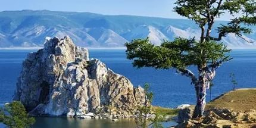

Озеро Байкал находится на юге Восточной Сибири. В форме рождающегося полумесяца Байкал вытянулся с юго-запада на северо-восток между 55°47' и 51°28' северной широты и 103°43' и 109°58' восточной долготы. Длина озера 636 км, наибольшая ширина в центральной части 81 км, минимальная ширина напротив дельты Селенги - 27 км (между мысами Голый на западном берегу Байкала и Средний на восточном). Расположен Байкал на высоте 455 м над уровнем моря. Длина береговой линии около 1850 км (без учета части побережья севернее острова Ярки). Более половины береговой линии озера включено в территорию заповедников, заказников и национальных парков.
Площадь водного зеркала, определенная при урезе воды 454 м над уровнем моря, 31470 квадратных километров. Максимальная глубина озера 1637 м, средняя глубина - 730 м.
В Байкал впадает 336 постоянных рек и ручьев, при этом половину объема воды, поступающей в озеро, приносит Селенга. Из Байкала вытекает единственная река - Ангара. Впрочем, вопрос о количестве рек, впадающих в Байкал, довольно спорный, скорее всего их меньше, чем 336. Несомненно то, что Байкал - самое глубокое озеро в мире, ближайший претендент на это звание, африканское озеро Таньганьика, отстает на целых 200 метров. На Байкале 30 островов, хотя, как было сказано выше, единодушия в данном вопросе нет. Самый крупный - остров Ольхон.
Байкальская вода уникальна и удивительна, как сам Байкал. Она необыкновенно прозрачна, чиста и насыщена кислородом. В не столь уж и древние времена она считалась целебной, с ее помощью лечили болезни. Весной прозрачность байкальской воды, измеренная с помощью диска Секки (белый диск диаметром 30 см), составляет 40 м (для сравнения, в Саргассовом море, которое считается эталоном прозрачности, эта величина равна 65 м).
Такая высокая прозрачность объясняется тем, что байкальская вода, благодаря деятельности живых организмов, в ней обитающих, очень слабо минерализована и близка к дистиллированной.
Объем воды в Байкале около 23 тысяч кубических километров, что составляет 20% мировых и 90% российских запасов пресной воды. Ежегодно экосистема Байкала воспроизводит около 60 кубических километров прозрачной, насыщенной кислородом воды.
Климат в Восточной Сибири резко континентальный, но огромная масса воды, содержащейся в Байкале, и его горное окружение создают необыкновенный микроклимат. Байкал работает как большой термостабилизатор - зимой на Байкале теплее, а летом немного прохладнее, чем, например, в Иркутске, находящемся на расстоянии 70 км от озера. Разница температур обычно составляет около 10 градусов. Значительный вклад в этот эффект дают леса, произрастающие почти на всем побережье Байкала.
В Байкале водится более 2600 видов и подвидов животных (2682, по состоянию на 2008 год) и более 1000 видов растительных организмов. Время от времени открывают новые виды. Есть основания полагать, что в настоящее время науке известны только 70-80% видов живых организмов, населяющих воды Байкала.